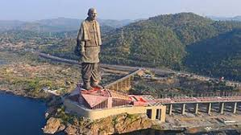
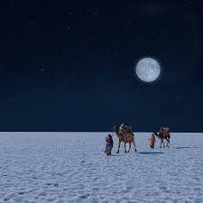
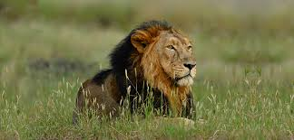
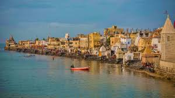
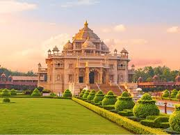

Statue of Unity

The world's tallest statue, dedicated to Sardar Vallabhbhai Patel, located on an island near the Narmada dam, surrounded by a complex featuring a museum and a viewing gallery.
Rann of Kutch

A vast expanse of white salt desert that looks surreal, especially during the Rann Utsav (festival). It's divided into the Great Rann and the Little Rann, famous for its stunning sunsets and unique landscape.
Gir National Park

The sole habitat of the Asiatic Lion, this protected area is known for its diverse ecosystem and offers one of the best wildlife safari experiences in India.
Dwarka

One of the four Char Dham pilgrimage sites, considered the ancient kingdom of Lord Krishna, featuring the magnificent Dwarkadhish Temple.
Ahmedabad

The former state capital and a major commercial hub, known for its rich history, iconic mosques, the Sabarmati Ashram (home of Mahatma Gandhi), and its designation as a UNESCO World Heritage City.